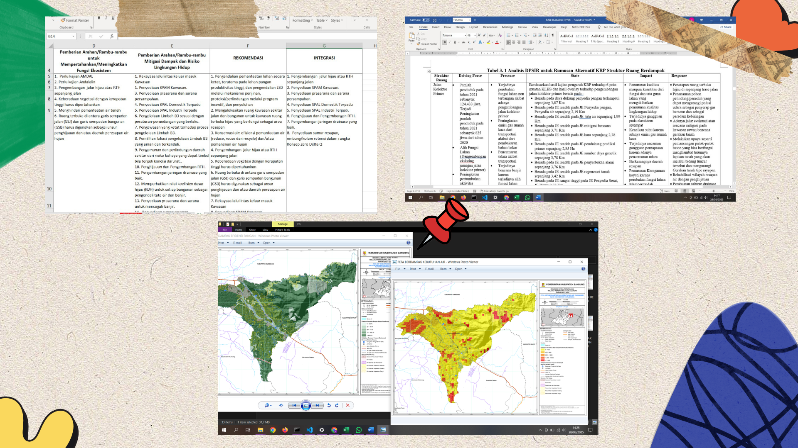
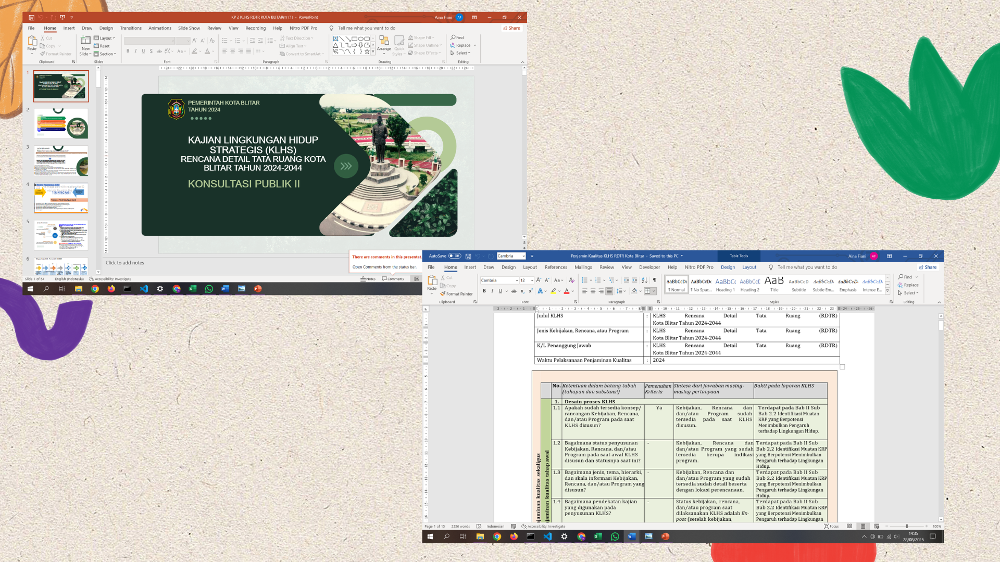
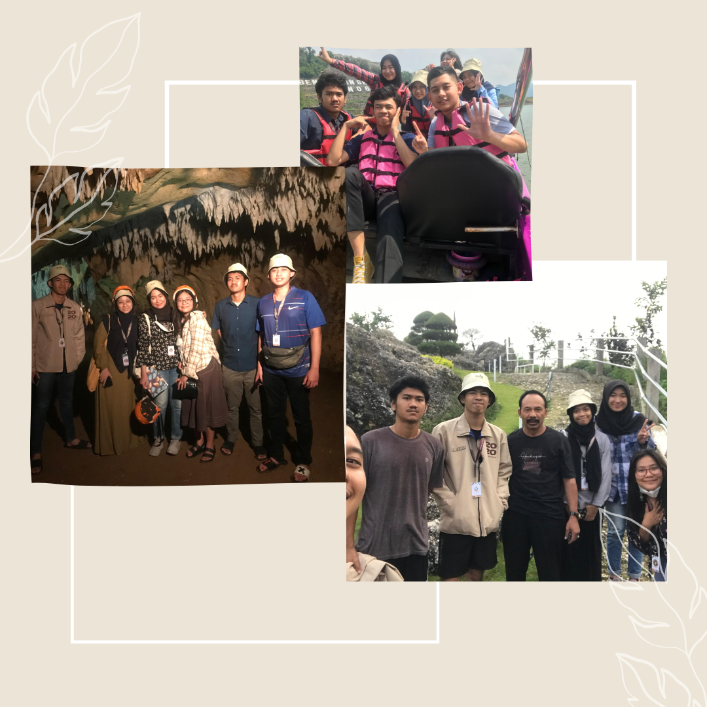

Halo, nama aku Aina Nurfiani
Dari pengalaman tersebut, aku belajar kerja tim, berpikir strategis, dan beradaptasi dalam situasi dinamis. Aku juga memiliki rasa ingin tahu tinggi dan selalu semangat untuk terus berkembang 🚀
Magang | Dokumen KLHS
Terlibat dalam analisis spasial, overlay KRP berdampak, analisis DPSIR, dan penyusunan rekomendasi.
Freelancer
Menyusun materi konsultasi publik dan dokumen penjamin kualitas.
Rencana Strategis Pariwisata
Penyusunan dokumen rencana strategis sektor pariwisata.